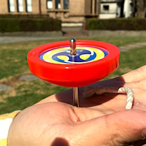

タイムテーブル
理学部1号館2階にある小柴ホールにて物理ショー班による実験ショーやその他の班による講演を行います。タイムテーブルは20日・21日ともに以下の通りです。
| 10:30-11:25 | 物理ショー班 | 物理・ふしぎ発見 |
| 11:30-11:55 | 計算機班 | 計算機の中の世界 |
| 12:00-12:25 | 宇宙班 | “透明”粒子をつかまえて |
| 14:00-14:25 | 低温班 | 低温の物理 |
| 14:30-14:55 | シンクロ班 | ここにもシンクロ |
| 15:00-15:25 | 量子測定班 | マクロな世界とミクロな世界 |
| 15:30-15:55 | 電子スピン班 | この物理界にトポロジーを！ |
| 16:00-16:55 | 物理ショー班 | 物理・ふしぎ発見（再） |
実験ショーについて
こんにちは、物理ショー班です！
五月祭に向けて実験ショーの準備をしています。
調べてみると、日常の生活の中にも考えると面白い現象がたくさんあることがわかってきました。
例えば、コマ回しです。
回ったコマは、一本足でバランスをとることができますが、止まると倒れてしまいます。
なぜでしょうか？
他にもたくさんの実験を用意しています。
五月祭当日、ぜひ、小柴ホールに来て見てください！
